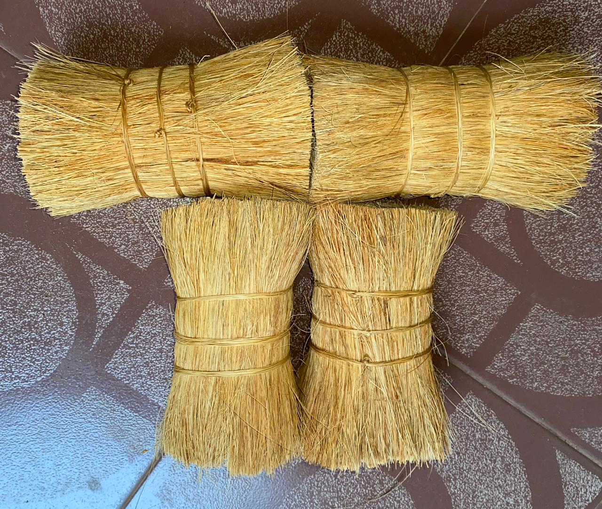

Coir, is the thickest and the most strongest of the Natural Fibres. Long and strong Fibers are commonly used in Brush and Broom manufacturing industries.
The stiff, straight and long strands of Fibre are termed Bristle Fibre or Brush Fibre. The basic grade of Bristle Fibre is known as 1-
Tie Fibre. This is then further hackled and classified into 2-Tie and 3-Tie based on the length of strands and the general condition
of Fibres.
Bristle Fibre are mainly used for Brush/Broom and Tawashi Industry, Production of Coir Twine, Potting Mixes/Growing Media,
Manufacture of special Filters.
We supply 1-Tie, 2-Tie and 3-Tie Bristle Fiber as follows ( as per Buyer’s requirement ),

SN ENTERPRISES is one of Sri Lanka's leading Manufacturers and Exporters in the production of Coconut Fibre, Coir based products.
We manufactured Bristle coir fiber since 2005 and near by 2020 we join to exporting market
most of times we export our goods to europien region.
© 2023 SN ENTERPRISES All rights reserved